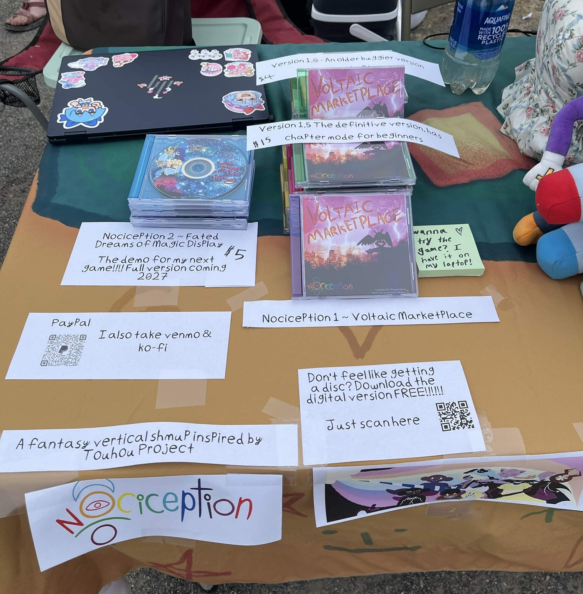
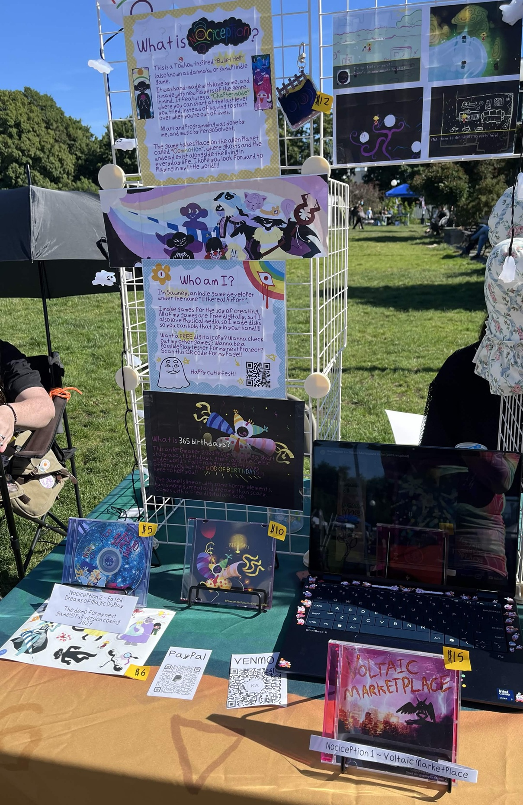
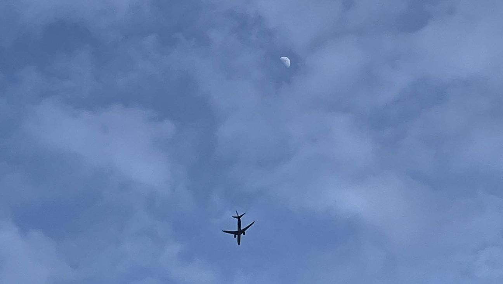

My first two cutiefests!! June 16, 2026
What is cutiefest exactly? It's a fun free-for-all market that takes place periodically in the summer where people can sell, well, anything they want!! Most organized markets require you to pay some kind of fee in order to have a table, but not here. You just walk up, set up your table and sell! Being as penniless as I am I knew I had to give it a shot, so I burned my games onto discs, went to the library to print some labels, and here we are!!
 
I shared a table with a few pals (shoutouts to yugo, val, and my lovely wife) and thankfully we got a great spot. However, it was a VERY WINDY morning. Every few minutes a mighty gust would come through and we had to chase down all our labels and prints, getting covered in dust the whole time ^_^;; Despite that it was an absolute blast and already was coming up with plans to make a better booth setup. (I sold FOUR WHOLE COPIES btw!! Wooooo)
Our second cutiefest, we were much more prepared. I had a lil more verticallity to my booth and even nice lil stands for my discs. It was a bright sunny day, but THE WIND WAS BACK!!! It was so strong there were tents flying, everywhere people were helping eachother pick up blown-away pieces of their booth. That didn't stop it from being fun, though. I think I'm going to be a cutiefest regular for life now. Until next time!!

Nociception.net is now live!! Jan 25, 2026
(Archived post)
My first post of what will be many many more as I physically cannot be stopped from making video games!!!!!
The site is pretty empty right now, but I hope to add lots of fun stuff to it!! Character stuff unique to the site, art gallery, maybe even some simple html games? Maybe I'm getting ahead of myself (I always say I'm nothing if not overambitious), but yes, this website will be the proper place to access everything Ethereal Airport!! Welcome in and enjoy your stay.
Older Posts